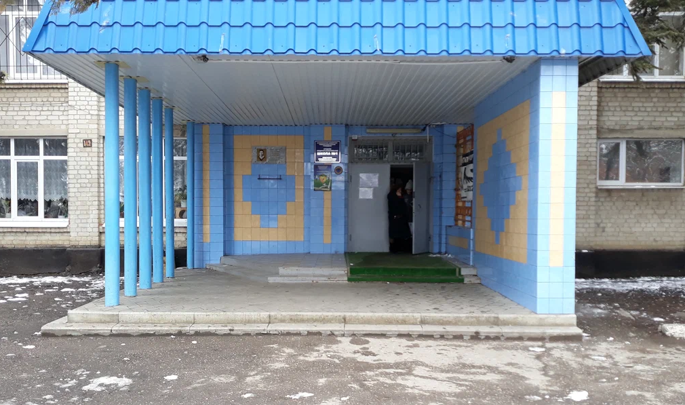

Моя школа
|

|
Среднеобразовательная школа №1 имени Рoмана Кулакова основана в 1956 году. Несмотря на возраст, школа не стоит на месте: она развивается и благоустраивается. Несколько лет назад отремонтировали спортзал и оборудовали спортивную площадку. В этом году создали 2 кабинета естесственно-научного профиля “Точка роста”, небольшую зону отдыха для игры в шахматы, фотозоны. Школа оборудованна интерактивными досками.
Моя школа награждена Дипломами Лауреата и памятной медалью Всероссийского конкурса “500 лучших образовательных организаций страны”, медалью “За организацию работы по патриотическому воспитанию подрастающего поколения”! Учится в школе почти 2 тыс. человек. Я очень люблю свою школу, поэтому хочу помогать в ее развитии и обустройстве. Несмотря на то, что она по-немногу модифицируется уже сейчас, для комфортного обучения хотелось бы добавить еще некоторые элементы, о которых я рассказываю в своем проекте.